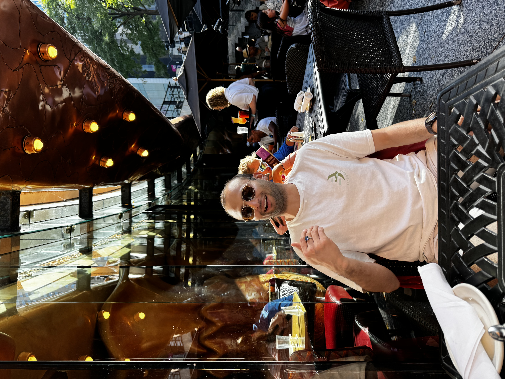

I spend a significant amount of time questioning the status quo and I believe ideas come to those who are in search of them. Thinking about technology, society and economics keeps me sane and listening to varied perspectives keeps it interesting.
Building this personal corner of the web where I want to collect ideas, notes, and experiments — in text, video, and files.
What I'm Thinking
Lately like and unlike everyone else, I've been obsessed with the idea of super intelligence and thefuture of humanity (It's mind wrecking to think of the sheer possibilities). And on a daily basis I keep coming back to the question: what does it take to make a robot genuinely useful (I mean truly truly useful)?
What I'm Up To
I'm a research engineer at Skild AI, where we do general purpose robotics. Prior to that I was at the Robotics Institute (RI) at Carnegie Mellon University, where I worked with professor Jeffrey Ichnowski and Zachory Erickson on mobile manipulation and perception in healthcare environments (ORB).
Where I'm From
I grew up in the foothills of the Himalayas in India and moved to the US for grad school. I did a fair bit of robotics back in India — at Addverb Technologies and at ZINE at MNIT Jaipur with professor Rajesh Kumar.
Some Things that might interest you
- Listen to Philosiphize This! by Stephen West — It's a masterpiece. You're welcome.
- This is hands down the most compressed 0 to 1 video on LLMs on the internet
- If you haven't read the report on microplastics in food, you should (Nat Friedman is a legend)